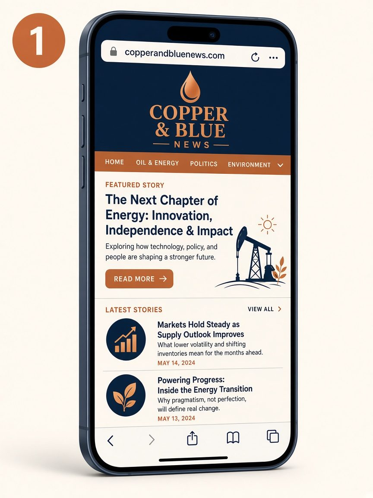
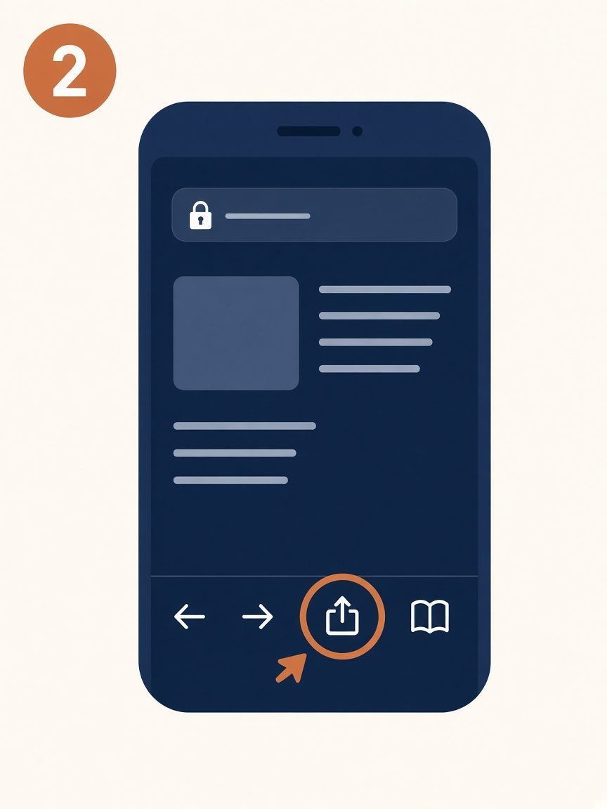
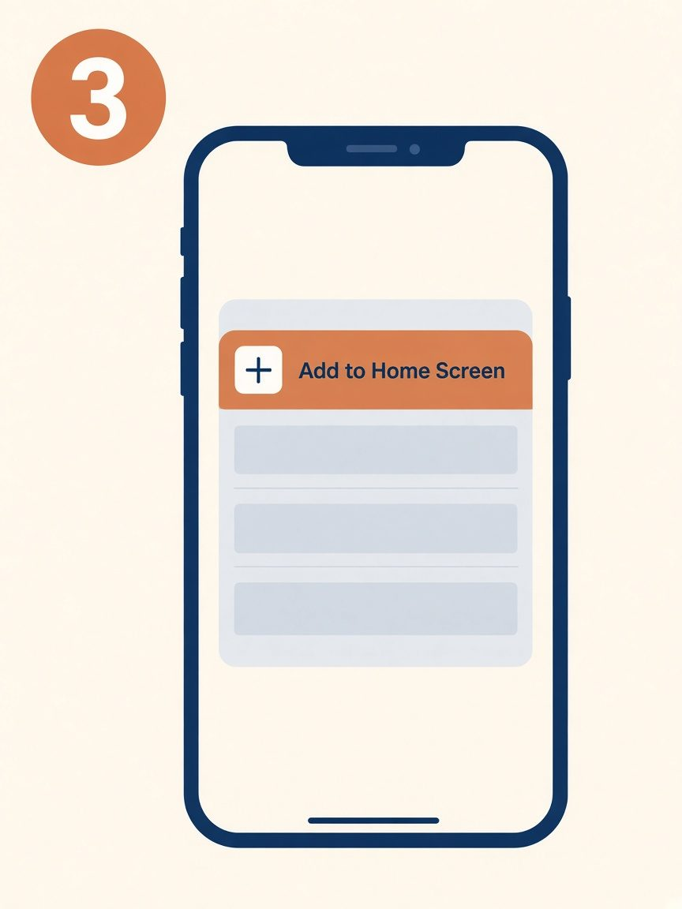
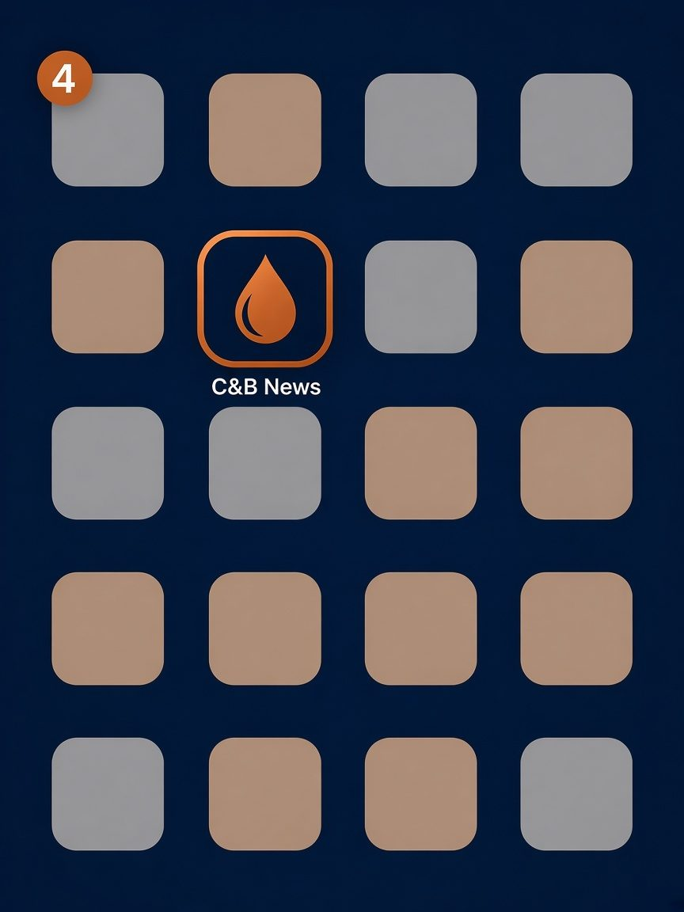
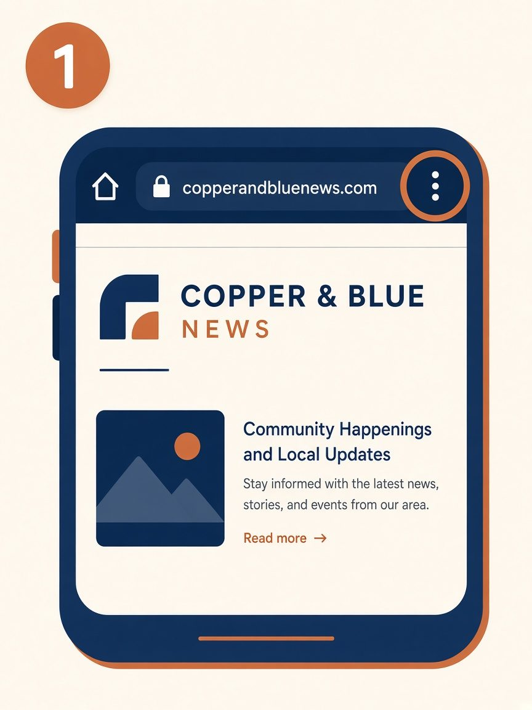
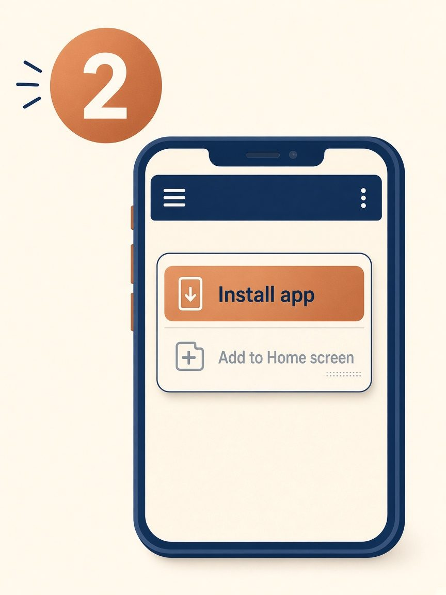

Get the app
Add The Copper & Blue News to your home screen and it opens like an app: Live rink, scores, and game alerts, without going through the App Store. The pictures below are simple guides, not exact copies of your phone’s menus.
iPhone and iPad
Use Safari. If you opened this from Instagram or another app, tap ••• and choose Open in Safari first. Game alerts only work after you open the app from your Home Screen (iOS 16.4 or newer).

1. Open the site in Safari
Go to copperandbluenews.com. Instagram, Facebook, or Chrome on iPhone won’t offer Add to Home Screen the same way.

2. Tap Share
The Share button is the square with the arrow pointing up, usually at the bottom of Safari (or at the top on iPad).

3. Tap Add to Home Screen
Scroll the share list until you see Add to Home Screen, then tap it. On the next screen, tap Add.

4. Open C&B News from your Home Screen
The icon lands with your other apps. Open it from there, then tap Alerts to turn on game notifications.
Android
Chrome works best. Some phones say Install app; others say Add to Home screen.

1. Open the site and tap the menu
Go to copperandbluenews.com in Chrome, then tap the three dots in the top-right corner.

2. Tap Install app
Choose Install app or Add to Home screen, then confirm. Open C&B News from your home screen and tap Alerts if you want notifications.
On a computer
In Chrome or Edge, open copperandbluenews.com and look for the install icon in the address bar, or open the browser menu and choose Install The Copper & Blue News.